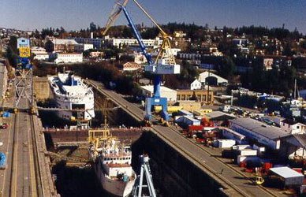

Cale sèche d'Esquimalt - Bienvenue
La Cale sèche d'Esquimalt (CSE) est la plus importante forme de
radoub commerciale de la côte Ouest des Amériques. Nous sommes situés dans
un port ouvert à l'année longue, sur l'île de Vancouver, à proximité des
voies d'accès
à l'Alaska et aux pays riverains du Pacifique.
Nos installations de calibre mondial sont équipées notamment
de logements pour stabilisateurs et d'appareils
de levage haute vitesse pour charges lourdes (capacité de 150-165
tonnes). La cale sèche peut recevoir des navires de 100 000
TPL, soit environ 90 % des navires du monde.
La CSE offre
des services de réparation et d'entretien naval aux entreprises
commerciales et aux particuliers, sur commande (premier arrivé,
premier servi). Tout le travail est assuré par des entreprises
de réparation navale du secteur privé.
Qui sommes-nous?
La CSE est une division du ministère fédéral des
Travaux publics et des Services gouvernementaux du Canada (TPSGC).
Les services de réparation de navires sont assurés 24 heures
sur 24, 7 jours sur 7 et 365 jours par année. Nous proposons toute
la gamme des services de réparation
navale, avec tous les équipements requis, notamment nos nouveaux logements
pour stabilisateurs facilitant les travaux d'entretien et de réparation
des dispositifs de stabilisation des navires.
Services offerts
La CSE est très appréciée des propriétaires
de navires pour leurs travaux de réparation et d'entretien :
- Paquebots de croisière;
- Navires vraquiers et navires de transport de marchandises diverses
desservant l'Alaska et les pays riverains du Pacifique;
- Navires canadiens - en particulier ceux du ministère de la
Défense nationale et de la British Columbia Ferry Corporation.
Grâce à notre système
de gestion environnementale homologué ISO 14001, nos travaux
sont exécutés
dans le respect de l'environnement. Nous sommes l'un
des trois chantiers de réparation navale multi-usagers au monde à posséder
cette homologation.